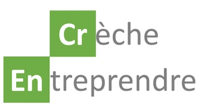
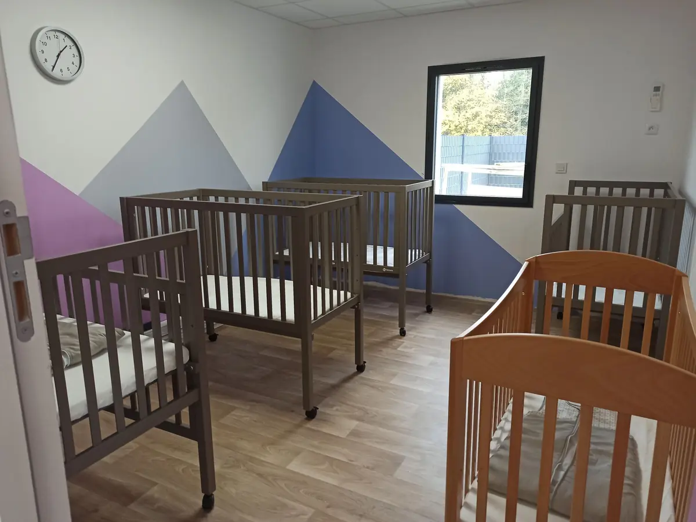
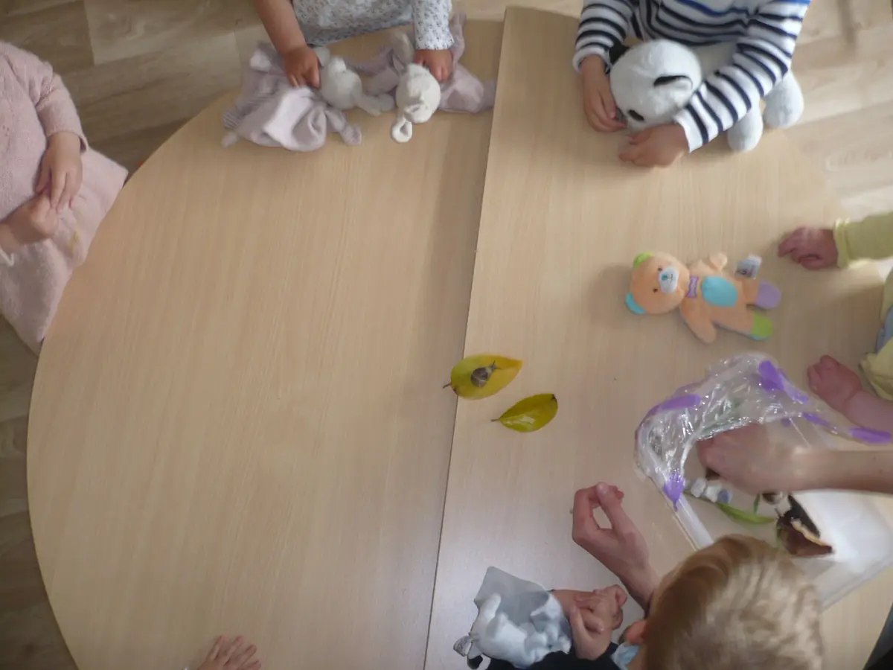
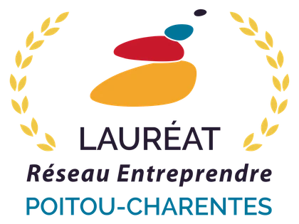
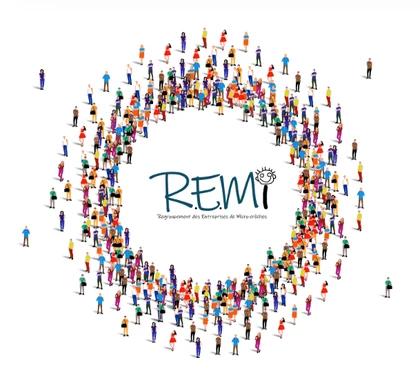

Crèche Entreprendre
Nous nous appuyons sur les conseils du président de l'association Crèche Entreprendre, qui accompagne la création de crèches privées partout en France.
Qui sommes-nous ?
Après avoir elle-même eu du mal à trouver un mode de garde pour ses enfants, Virginie Dupire a voulu offrir aux familles ce qu'elle aurait aimé trouver : un lieu d'accueil de qualité, à dimension humaine et proche de chez soi.

Notre histoire
La première micro-crèche Loupiala ouvre à Benon en janvier 2021. Sa petite sœur naît à Mauzé-sur-le-Mignon le 2 septembre 2024, et une troisième maison ouvre au Thou le 31 août 2026.
Nos trois crèches sont privées, totalement indépendantes et sans subvention. Elles sont conventionnées par la CAF, ce qui vous permet de bénéficier du CMG, et agréées par les services de PMI.
Notre équipe
Dans chaque crèche, une équipe de 4 à 5 personnes accompagne votre enfant dans son développement.
Virginie Dupire, fondatrice et gestionnaire des structures : votre interlocutrice pour les inscriptions, les contrats et les tarifs.
Une éducatrice de jeunes enfants (EJE), qui assure aussi la direction, et 4 professionnelles diplômées de la petite enfance. Apprentis et stagiaires viennent régulièrement renforcer l'équipe.
Il nous accompagne pour les conseils et avis médicaux, la mise en place des protocoles et la validation des PAI (projets d'accueil individualisés).

Nos valeurs
Nos partenaires

Nous nous appuyons sur les conseils du président de l'association Crèche Entreprendre, qui accompagne la création de crèches privées partout en France.

Lauréate du Réseau Entreprendre Poitou-Charentes, réseau de chefs d'entreprise bénévoles qui accompagne les créateurs à fort potentiel d'emplois.

Le Regroupement d'Entreprises de Micro-crèches, première association de micro-crèches privées de France : échanger, s'entraider et représenter la profession.
Nous serons ravies de vous faire visiter l'une de nos crèches et de répondre à toutes vos questions.